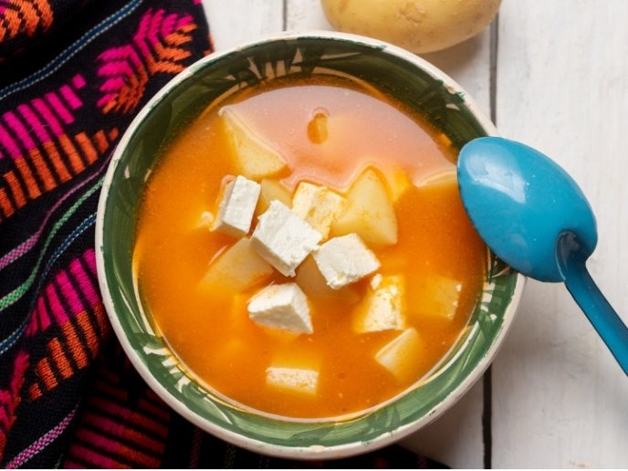

Caldo de queso con papa

What is Caldo de Queso con Papa?
Mexican Caldo de Queso con Papa is a soup from the northern states in Mexico, a traditonal dish from the State of Sonora. It's a delicious & healthy soup with chunks of potatoes and queso fresco, what is curd cheese.
Ingredients
- 1/2 kilo potatoes peeled and cut into squares
- 1/2 kilo queso fresco
- 1 tablespoon bouillon granules
- 1 garlic
- 1/2 chopped onion
- 1 red tomato or chopped tomato
- 1/2 chopped white onion
- 2 poblano chiles
- 1 cup of milk
- 2 inches oregano
- pepper to taste
Directions
- Heat 2 tablespoons of the oil in a medium or large pot. Add the onions and saute over medium heat about 5 minutes. After that, add the garlic and cook for one minute.
- Add the tomato nad cook for 5 minutes or until they are soft.
- Add the potatoes, salt, pepper and oregano. And mix well and cook for 3 to 4 minutes.
- Now add water, and the chicken bouillon. Cover the pot with a lid and cook until the potatoes are cooked through for about 25 to 30 mins.
- When the potatoes are soft, add the chile strips and cook for 5 minutes.
- Finally, add the milk (warm, so that it doesn't curd when added to the hot broth)